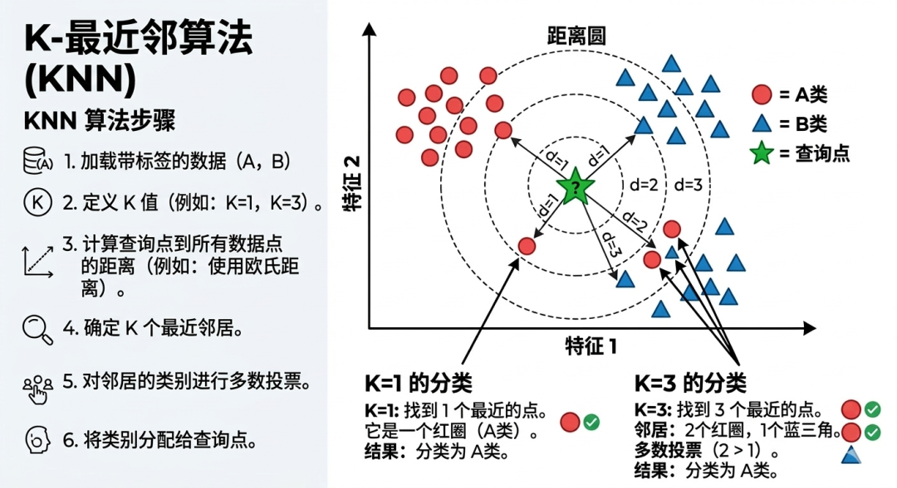
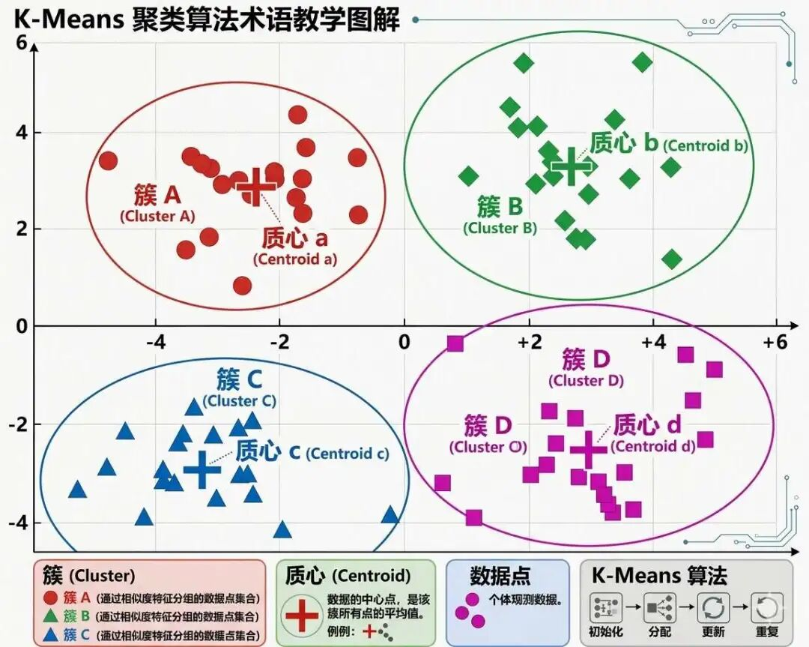
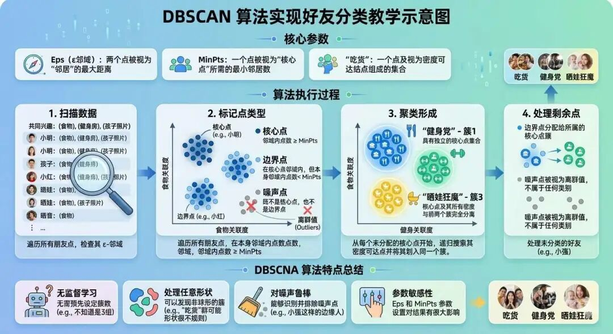
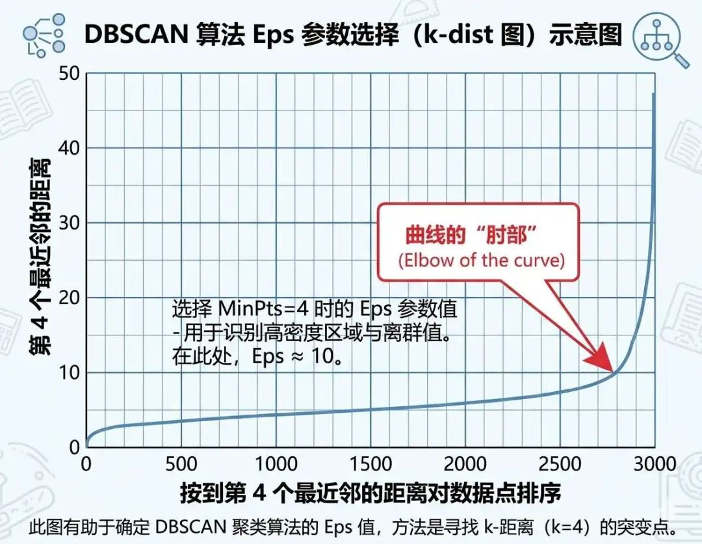
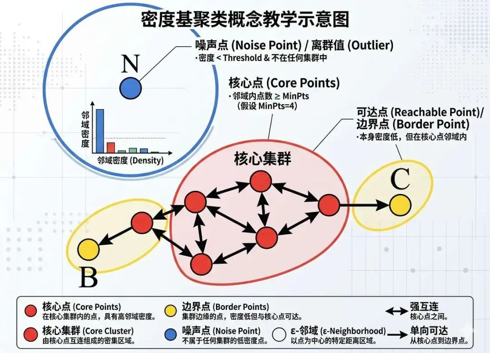

机器人不得伤害人类个体，或者目睹人类个体将遭受危险而袖手不管，除非这违反了机器人学第零定律。——阿西莫夫
今天我们来学习一种新的算法类型——无监督学习中的代表方法：聚类算法。
我们之前说过，机器学习分为无监督学习和有监督学习，划分的依据就是训练的时候样本是否带有标签。
之前我们学习的算法：线性回归、逻辑回归、支持向量机、决策树等，都是有监督学习。而今天要学习的聚类算法，样本是不带标签的。
聚类算法的目标，通常是让相似的数据点尽量归为一类，使得簇内更相似、簇间差异更明显。
不过要注意，不同聚类算法实现这一目标的方式并不相同：有些算法会把所有数据点都分进某个簇里，有些算法则会把一部分点识别为噪声点，不强行分组。
从思想上看，聚类算法和 KNN 都会用到“距离”或“相似性”这样的工具，但它们的任务完全不同。
KNN 是一种有监督学习方法，它要根据带标签的邻居，去判断一个新来的样本属于哪一类；而聚类算法是无监督学习，它没有现成标签，要做的是直接对现有数据进行分组。

接下来，我们将通过生活中的案例来介绍聚类算法中的两种重要的实现方法：K-means算法和DBSCAN算法。
假设你现在要对你的朋友圈好友分成三类：“吃货”、“健身党”、“晒娃狂魔”3组，K-means会这样操作：
对好友行为特征进行量化，我们可以围绕“关键词频率”、“行为特征”、“时间特征”来统计：
关键词频率：
首先是关键词统计，主要统计好友朋友圈历史内容中与目标群组相关的关键词出现频率。例如：
（1）吃货组可以围绕“火锅”、“奶茶”、“探店”等词汇进行统计；
（2）健身党可以围绕“跑步”、“撸铁”、“增肌”等词汇进行统计；
（3）晒娃狂魔可以围绕“宝宝”“幼儿园”“亲子”等词汇进行统计。
行为特征：
其次是朋友们行为特征的统计，比如点赞/评论健身类、美食类、亲子类内容的频次。
时间特征：
然后是发帖时段分布的统计，比如如健身党多发早晚，晒娃党一般多发周末。
最后我们还要针对以上数据进行处理，将上述特征转化为数值矩阵，例如“火锅”词频归一化为0-1区间范围内的数值。
| 好友ID | 火锅词频 | 健身点赞Z-score | 周末发帖占比 | ... |
|---|---|---|---|---|
| A | 0.8 | 1.2 | 0.7 | ... |
| B | 0.1 | -0.5 | 0.3 | ... |
| C | 0.5 | 0.8 | 0.6 | ... |
然后要给每个组都选择一个组长作为“核心”，这个核心在Kmeans算法中称作为“质心”，选3个具有强烈特征：特别爱美食、特爱健身或者是是特别爱晒娃的好友作为组长，他们作为分组的中心点。
比如张三每日三餐都频繁在晒美食，那就把她作为美食党的组长；而李四八块腹肌，一身腱子肉，每天晚上必打卡，就作为健身党的组长，最后是王五这个好友，婚后生子天天晒萌娃，就作为晒娃党的组长。
这些组长就是每组的质心，质心就是每一类的中心点，你可以想象你的这些好友全部站在操场上，而聚类的任务就是将这些好友往质心所在的组进行分组，最一开始每组只有质心一个成员。

有了 3 个初始质心之后，接下来就可以把每个好友分配到离自己最近的那个质心所在的组。这里最常用的衡量方式是“距离”，例如欧氏距离。距离越小，说明两个点在特征空间里越接近。
比如，好友 D 在“美食相关词频”“健身互动频率”“周末发帖占比”等多个维度上，整体上离“吃货组”的质心最近，那么它就会被分到吃货组。
这样，我们就完成了第一轮分组。通过对每个好友和组长的相似性计算，我们完成了第一轮的拉人入群，实现了最终的分组。
所有的人都分完了组之后，针对每个组需要重新选组长，新组长是该群成员的平均值。这个新的中心点，就是更新后的质心。
比如张三是吃货组的成员，根据之前的特征处理，吃货频次（相关关键词）是10，李四也是吃货组的成员，吃货频次是8，以此类推，将所有的吃货频次加总然后除以总人数，得到这个组的均值，然后选择最靠近均值的成员，作为新的质心。
为什么要选择新的质心呢？
因为初始质心是随机的，可能无法代表其所在簇（组）的“中心”或者是平均水平，通过迭代地“分配-调整”，质心会逐渐移动到能够最小化簇内数据点与质心之间总距离的位置，从而使簇内部更紧凑，聚类效果更合理和稳定。
如果使用 K-means++ 初始化方法，可以让初始质心彼此尽量分散，从而减少“几个质心一开始就扎堆”的问题。
新组长作为新的质心，继续上面的第三步和第四步，即重新“拉人”和“选组长”，直到不论怎么拉人，组长都是同一个，分组不再变化为止。
从优化角度看，K-means 的迭代过程，本质上是在不断减小簇内样本到各自质心的平方距离之和，即 簇内平方和（WCSS）。
通过降低每个簇中所有点与其质心的偏离程度的总和，WCSS 值越小，说明簇内的点彼此越相似、越紧凑，聚类效果就越好。
所以 K-means 看起来像是在“拉人入群”，其实背后做的是一个不断优化中心位置、压缩簇内离散程度的过程。
K-means 虽然很好理解，也很常用，但它有自己的局限。它更适合处理那些形状比较规则、彼此分离较明显、能够用“中心点”代表的簇。
如果数据的分布很复杂，比如弯弯曲曲的月牙形、细长条形、环形，K-means 往往就不太擅长了。
所以，除了 K-means，聚类里还有另一类非常重要的方法——DBSCAN。

假设你现在还是要对你的好友分成三类：“吃货”、“健身党”、“晒娃狂魔”3组，DBSCAN会这样操作：
依然还是要对好友行为特征进行量化，我们还是围绕“关键词频率”、“行为特征”、“时间特征”来统计：
关键词频率：
首先是关键词统计，主要统计好友朋友圈历史内容中与目标群组相关的关键词出现频率。例如：
（1）吃货组可以围绕“火锅”、“奶茶”、“探店”等词汇进行统计；
（2）健身党可以围绕“跑步”、“撸铁”、“增肌”等词汇进行统计；
（3）晒娃狂魔可以围绕“宝宝”“幼儿园”“亲子”等词汇进行统计。
行为特征：
其次是朋友们行为特征的统计，比如点赞/评论健身类、美食类、亲子类内容的频次。
时间特征：
然后是发帖时段分布的统计，比如如健身党多发早晚，晒娃党一般多发周末。
最后我们还要针对以上数据进行处理，将上述特征转化为数值矩阵，例如“火锅”词频归一化为0-1区间范围内的数值。
| 好友ID | 火锅词频 | 健身点赞Z-score | 周末发帖占比 | ... |
|---|---|---|---|---|
| A | 0.8 | 1.2 | 0.7 | ... |
| B | 0.1 | -0.5 | 0.3 | ... |
| C | 0.5 | 0.8 | 0.6 | ... |
K-means和DBSCAN算法都是基于“物以类聚，人以群分”的思想，但不同于 K-means 算法，DBSCAN 需要知道“朋友圈范围”和“最低活跃人数”才能聚类。
这个“朋友圈范围”在 DBSCAN算法中用邻域半径 $Eps$ 来表示，比如，你规定“每周互动超过3次才算朋友”，这个“3次”的互动频率对应的距离就是 $Eps$ 。
而“最低活跃人数”，是你定义的“活跃分子”门槛，在 DBSCAN 算法中，使用 $MinPts$ 参数表示，比如，你觉得“至少5个人讨论同一话题才算一个群组”，这个5就是 $MinPts$。
你可以把它理解为“成团门槛”。 比如，一个话题附近至少聚拢了 5 个足够接近的人，才算形成一个真正的圈子，而不是零零散散的巧合。
一般来说 $MinPts$ 和 $Eps$ 的值，是通过经验得到的，一般：$MinPts$ ≥ 数据维度+1。例如二维数据选3，三维选4。因为维度越高，数据越稀疏，需要更多人才能保证密度。
不过还有一种 $k$ 距离图观察法可以确定 $MinPts$ 和 $Eps$ 的值：
（1）首先对每个好友（数据点），计算它与第 $k$ 个最近邻的距离。
这个 $k$ 是一个辅助作用的值，计算公式 $k = 2 * 数据维度 - 1$ 。例如二维经纬度取 $k=3$ ，对应 $MinPts=4$ ；一般按照学术界经验取 $k=4$ 。
K的取值学术界按照维度+1原则：MinPts ≥ 数据维度+1（例如二维数据选3，三维选4）。因为维度越高，数据越稀疏，需要更多人才能保证密度。
（2）然后将所有数据点按照上一步计算得到的k-距离值从小到大排序作为横轴，每个点的k-距离值作为纵轴，绘制成曲线图，称为 $k$-距离图。

（3）找拐点：曲线从平缓变陡峭的位置，对应的距离就是合适的 $Eps$ 值。假设曲线在距离 5.5 处突然变陡，说明大部分人的互动范围在5.5以内，设 $k=4，Eps=5.5$。
“ $k$ 距离图” 是一种基于“全局密度阈值”的思想来进行聚类的，什么意思呢？
首先理解什么是密度，密度的定义是以“核心点”为中心，半径为 $Eps$ 的圆形区域的所有数据点的集合，体现了有限范围内数据点的集中程度，这么说可能还不够直观，你可以理解为DBSCAN 判断某人是否可以拉进群的标准如下：
（1）活跃分子是核心点，在核心点邻域范围 $Eps$ 内超过了MinPts个人，则核心点设置为群主，通过他建群拉人，比如张三建了吃货群；
（2）边缘好友是边界点，其自身邻域内的点数不足 MinPts，在核心分子张三的邻域内被拉进群。边界点有多个，可能被多个核心点的邻域共享。
（3）孤僻分子是噪声点，不属于任何核心点的领域半径 $Eps$ 内，无人互动，不拉进群，比如赵六从不发动态。
实际上 $k$ 距离图的拐点就是将孤僻分子，即噪声点排除在外的分界点。
既然有人拉人的标准，那要怎么拉群呢？DBSCAN 建簇的方式，不是像 K-means 那样“先定中心、再全量分配”，而是像“在稠密区域里一点点扩张”。
1）首先要建群，对于密度直达：建群的“直接好友”，什么是密度直达呢？核心点（群主）的 $Eps$ 邻域内所有数据点，都是它的“直接好友”，称为密度直达。
$Eps$ 定义了 密度的最小连通距离。若两点间距超过 $Eps$ ，则它们无法通过直接密度相连，即使属于同一语义簇（如形状不规则的簇）。
例如：张三（核心点）周围有5个好友（$≥MinPts$），李四在张三的邻域内，李四就由张三密度直达。
通过核心点直接拉人进群，就可以形成初始成员。即先找到一个核心点，作为某个簇的起点。
2）其次要扩群，针对“密度可达”的朋友，来扩展群规模，什么是密度可达呢？通过多个核心点形成的“朋友链”，把更多人拉进群。
例如：张三拉李四进群 → 李四（核心点）拉王五 → 王五拉赵六……最终张三到赵六是密度可达的。
最终让群像病毒传播一样扩展，即使成员不直接认识群主，也能通过中间人加入。
3）最后是合并重叠群，通过“密度相连”，即通过共同群主连接不同群的朋友，密度相连的定义是：若两个点通过同一个核心点间接连接，则它们是密度相连的。
例如：张三和李四都通过王五（共同核心点）加入群组，即使张三和李四不直接认识，也属于同一群。
这样能确保不同分群的成员最终合并到同一群，避免分裂。

k 的含义是“第 k 个近的邻居”。它相当于一个“密度探头”，通过探测数据中不同区域的点间距，自动找到密度变化的临界点（即拐点）。这个临界点对应的距离就是 ε（邻域半径），从而区分出密集区和稀疏区。
在DBSCAN算法中，邻域半径（Eps）和最小邻居数（MinPts）是全局参数，意味着它们对整个数据集中的所有点统一适用，而不是为每个小团体单独设定。因此，所有簇的密度判定标准是相同的，但这并不代表每个小团体的“人数”或“半径”都差不多。
高密度区域：点分布紧密，核心点数量多，可能形成较大的簇。
低密度区域：点分布稀疏，可能无法形成簇，或仅生成少量边界点。
为什么发明者会想到这两个参数？
个人推测其灵感来源模仿现实中的“密度”概念：人群聚集起来需要两个条件：互动范围（Eps）和最低活跃人数（MinPts）。比如，广场舞大妈们以音响为中心（Eps范围），凑够5个人（MinPts）才会形成固定队伍。
K-means 和 DBSCAN 的区别到底在哪里呢？
K-means 需要先指定 K 值，也就是你得先告诉算法要分成几类。 而 DBSCAN 不需要预先指定簇数，它是根据数据的局部密度自动形成簇的。
K-means 主要基于“距离到中心点有多近”来分组。 而 DBSCAN 主要基于“某一区域是否足够稠密”来分组。
K-means 更适合处理形状较规则、能够用中心点代表的簇。 而 DBSCAN 更擅长发现不规则形状的簇，比如月牙形、条带形、环形等。
K-means 会把所有点都分进某个簇里， 它本身并不会主动把离群点识别为噪声。 而 DBSCAN 可以天然识别噪声点，因此在含有异常点的数据中通常更有优势。
K-means 对 K 值和初始质心 比较敏感； DBSCAN 对 Eps 和 MinPts 比较敏感。
如果数据分布比较均匀、簇形状相对规则，而且你大致知道要分成几组， 同时又希望算法速度快、实现简单，那么 K-means 往往是一个很好的起点。
例如：电商用户分群、客户画像初筛、商品粗分类等场景，都经常会先尝试 K-means。
如果数据里含有噪声点、异常点，或者你怀疑簇的形状比较复杂，又或者你不想一开始就先拍脑袋指定簇数，那么 DBSCAN 往往会更合适。
例如：信用卡欺诈交易中的异常识别、空间地理数据中的热点区域发现、轨迹数据分析等场景，都比较适合考虑 DBSCAN。
无监督学习（Unsupervised Learning）：指训练数据没有人工标注的“正确答案”，模型需要自己从数据中发现结构、规律或分组方式。聚类算法就是无监督学习中的典型代表。
聚类（Clustering）：指将相似的数据点自动归为同一组的过程。目标通常是让同一组内部更相似，不同组之间差异更明显。
质心（Centroid）：在 K-means 中，质心表示某个簇在特征空间中的中心位置，通常由该簇内所有样本在各个维度上的均值决定。它不一定对应某个真实存在的数据点。
簇内平方和（WCSS）：指所有样本到各自簇质心的距离平方和。这个值越小，通常说明同一簇内部越紧凑。
邻域半径（Eps）：在 DBSCAN 中，用来定义“多近才算邻居”的距离阈值。某个点周围 Eps 范围内的点，会被视为它的邻居。
最小邻居数（MinPts）：在 DBSCAN 中，用来判断某一区域是否足够稠密的阈值。如果某个点的邻域内邻居数量达到 MinPts，它就可以成为核心点。
核心点（Core Point）：指在 Eps 邻域内拥有足够多邻居的数据点，说明它位于一个相对稠密的区域中，是 DBSCAN 扩展簇的起点。
边界点（Border Point）：指自身邻域不够稠密，达不到核心点标准，但落在某个核心点邻域内的点。它可以被归入某个簇，但通常不能继续向外扩展簇。
噪声点（Noise Point）：指既不是核心点，也不属于任何核心点邻域范围内的点。它通常表示离群样本或异常点。